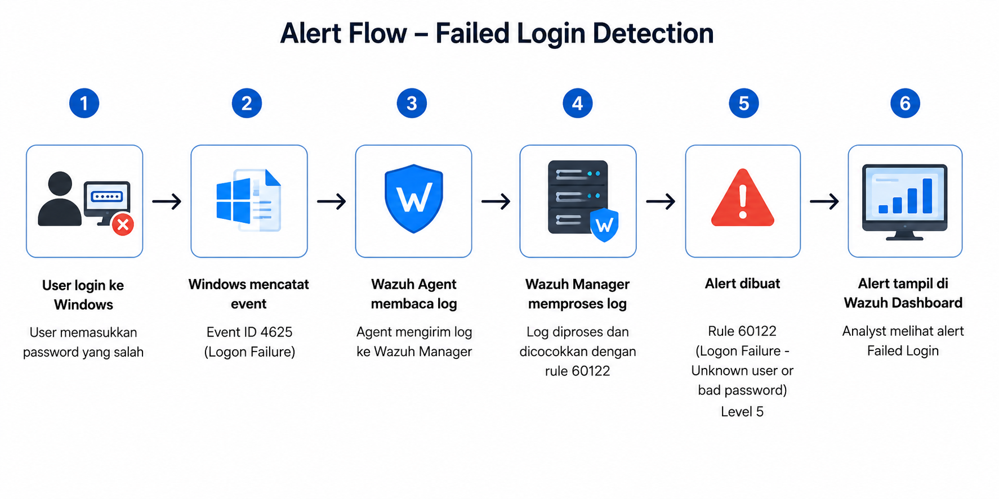
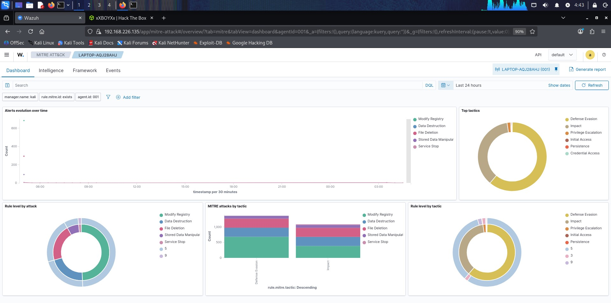
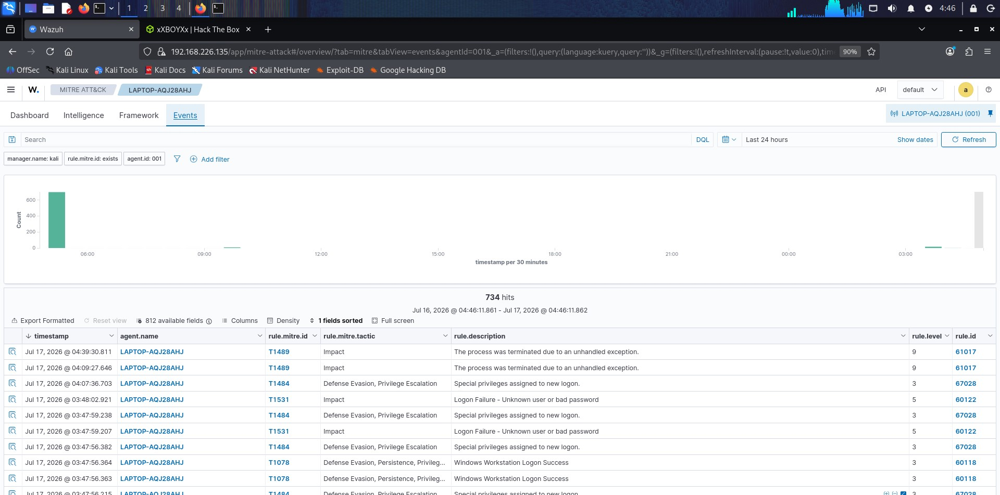

Visualisasi log hasil pengujian dari Windows Event Viewer dan Alert yang tertangkap di Wazuh Dashboard:



Alert pada Wazuh Dashboard
Pengujian ini bertujuan untuk mengetahui apakah Wazuh mampu mendeteksi percobaan login yang gagal pada sistem operasi Windows melalui log keamanan (Windows Security Event Log).
Pengujian dilakukan dengan memasukkan password yang salah pada saat proses login Windows. Sistem Windows akan mencatat aktivitas tersebut sebagai log keamanan, kemudian log dikirim oleh Wazuh Agent ke Wazuh Manager untuk diproses. Apabila log sesuai dengan rule yang dimiliki Wazuh, maka alert akan ditampilkan pada dashboard.
Pengguna memasukkan username atau password yang tidak sesuai saat login ke Windows.
Windows secara otomatis mencatat aktivitas tersebut pada Security Event Log dengan Event ID 4625, yang menunjukkan bahwa proses login gagal. Informasi yang tercatat antara lain:
Wazuh Agent yang terpasang pada komputer Windows membaca Event Log secara otomatis tanpa memerlukan tindakan dari pengguna.
Log yang diterima kemudian dianalisis oleh Wazuh Manager dan dibandingkan dengan kumpulan rule deteksi yang tersedia. Pada pengujian ini, log sesuai dengan:
| Informasi | Nilai |
|---|---|
| Rule ID | 60122 |
| Rule Description | Logon Failure - Unknown user or bad password |
| Rule Level | 5 |
Setelah rule sesuai, Wazuh menghasilkan alert yang menandakan adanya percobaan login yang gagal. Alert tersebut kemudian diberi informasi tambahan berupa klasifikasi MITRE ATT&CK sesuai mapping yang dimiliki Wazuh.
Alert dapat dilihat melalui Dashboard Wazuh sehingga administrator atau analis SOC dapat melakukan monitoring terhadap aktivitas login yang gagal.
Berikut adalah bukti tangkapan layar aktivitas log keamanan lokal dan visualisasi peringatan pada sistem SIEM Wazuh:
Berdasarkan hasil pengujian, Wazuh berhasil mendeteksi percobaan login yang gagal pada sistem operasi Windows.
| Parameter | Hasil |
|---|---|
| Event | Failed Login |
| Event ID | 4625 |
| Rule ID | 60122 |
| Rule Level | 5 |
| Status | Berhasil Terdeteksi |
Hasil pengujian menunjukkan bahwa Wazuh dapat membaca Windows Security Event Log dan menghasilkan alert ketika terjadi percobaan login yang gagal.
Alert tersebut dapat dimanfaatkan oleh administrator untuk melakukan pemantauan terhadap aktivitas login yang mencurigakan, seperti kesalahan password yang berulang atau indikasi percobaan akses tidak sah (Brute Force Attack).
Berdasarkan pengujian yang telah dilakukan, sistem Wazuh berhasil mendeteksi aktivitas Failed Login pada komputer Windows. Ketika pengguna memasukkan password yang salah, Windows mencatat kejadian tersebut sebagai Event ID 4625, kemudian Wazuh Agent mengirimkan log ke Wazuh Manager untuk diproses. Setelah log sesuai dengan Rule ID 60122, Wazuh menghasilkan alert yang ditampilkan pada Dashboard sehingga administrator dapat mengetahui adanya percobaan login yang gagal dan melakukan pemantauan lebih lanjut.